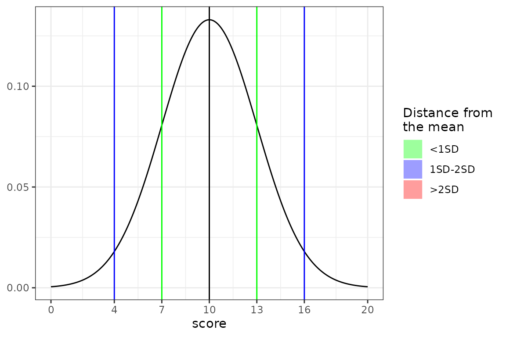

Procedural and Object-oriented workflows of stenR
stenR_workflows.RmdstenR provides tools that can be used in fully procedural way, best known to most R users, as well as object-oriented way.
Both of these ways can be beneficial and useful on their own:
- procedural:
- could be more handy for useRs not accustomed with
R6classes - catered for one-offs: when you have gathered a lot of raw scores and there is a need to calculate score tables, standardize them
- could be more handy for useRs not accustomed with
- object-oriented:
- easily normalize multiple discrete numeric variables
- catered for inter-session continuity: automatically append new standardized values to already computed score tables
Procedural workflow for using stenR functionality
stenR currently is based on few S3 classes and can be used in purely procedural workflow, which will be described below. Exemplary data provided with package will be used:
library(stenR)
# data gathered in Polish sample - 204 summed results of HEXACO-60 questionnaires
str(HEXACO_60)
#> 'data.frame': 204 obs. of 9 variables:
#> $ user_id: chr "neutral_peregrinefalcon" "trapeziform_zebradove" "polyhedral_solenodon" "decrepit_norwayrat" ...
#> $ sex : chr "F" "F" "F" "F" ...
#> $ age : int 26 24 26 25 31 25 62 19 24 26 ...
#> $ HEX_H : int 42 38 18 21 32 34 37 39 41 30 ...
#> $ HEX_E : int 33 31 17 24 35 30 37 13 33 24 ...
#> $ HEX_X : int 34 36 16 29 24 34 39 27 23 34 ...
#> $ HEX_A : int 36 44 42 22 31 34 23 27 15 21 ...
#> $ HEX_C : int 36 36 35 43 34 28 41 19 49 38 ...
#> $ HEX_O : int 31 28 37 47 28 39 44 42 22 38 ...1. Create a Frequency Table object on basis of some variable
HEX_H_ft <- FrequencyTable(HEXACO_60$HEX_H)
#> Warning in FrequencyTable(HEXACO_60$HEX_H): There are missing score values
#> between minimum and maximum scores. They have been filled automatically.
HEX_H_ft
#> <FrequencyTable> computed on: 204 observations
#> range: incomplete (missing raw score values between <min> and <max>)
#>
#> score n freq quan Z
#> 14 1 0.4901961 0.2450980 -2.81340671
#> 15 1 0.4901961 0.7352941 -2.43954226
#> 16 2 0.9803922 1.4705882 -2.17792307
#> 17 0 0.0000000 1.4705882 -2.17792307
#> 18 3 1.4705882 2.6960784 -1.92746610
#> 19 2 0.9803922 3.9215686 -1.75986103
#> 20 1 0.4901961 4.6568627 -1.67907589
#> 21 3 1.4705882 5.6372549 -1.58597448
#> 22 0 0.0000000 5.6372549 -1.58597448
#> 23 2 0.9803922 6.8627451 -1.48609157
#> 24 3 1.4705882 8.0882353 -1.39916101
#> 25 3 1.4705882 9.5588235 -1.30710672
#> 26 5 2.4509804 11.5196078 -1.19934929
#> 27 8 3.9215686 14.7058824 -1.04913140
#> 28 8 3.9215686 18.6274510 -0.89170883
#> 29 10 4.9019608 23.0392157 -0.73755598
#> 30 14 6.8627451 28.9215686 -0.55567745
#> 31 11 5.3921569 35.0490196 -0.38399738
#> 32 7 3.4313725 39.4607843 -0.26732923
#> 33 9 4.4117647 43.3823529 -0.16664795
#> 34 11 5.3921569 48.2843137 -0.04301914
#> 35 13 6.3725490 54.1666667 0.10463346
#> 36 17 8.3333333 61.5196078 0.29288789
#> 37 7 3.4313725 67.4019608 0.45103991
#> 38 13 6.3725490 72.3039216 0.59189400
#> 39 13 6.3725490 78.6764706 0.79524571
#> 40 5 2.4509804 83.0882353 0.95765790
#> 41 6 2.9411765 85.7843137 1.07067914
#> 42 5 2.4509804 88.4803922 1.19934929
#> 43 2 0.9803922 90.1960784 1.29280523
#> 44 6 2.9411765 92.1568627 1.41570209
#> 45 6 2.9411765 95.0980392 1.65443473
#> 46 3 1.4705882 97.3039216 1.92746610
#> 47 0 0.0000000 97.3039216 1.92746610
#> 48 0 0.0000000 97.3039216 1.92746610
#> 49 2 0.9803922 98.5294118 2.17792307
#> 50 2 0.9803922 99.5098039 2.58266941Generated warning tells us that there were some raw scores between min() and max() values that weren’t represented in the sample. We can see that was the case for a few scores:
which(HEX_H_ft$table$n == 0)
#> [1] 4 9 34 35We can also see it while plotting the resulting FrequencyTable:
plot(HEX_H_ft)
By the rule of thumb: the more possible values the raw scores can get and the smaller your data, the bigger possibility for this to happen. If you feel that your sample was representative, you can ignore it. It is recommended though to get more varied, greater number of observations when getting this warning.
2. Generate ScoreTable using FrequencyTable
FrequencyTable is a basis for normalizing the distribution of your data. Now, the next step is to standardize it using some StandardScale and generating ScoreTable.
There are some StandardScale objects available in the package. They define score scale. We can use the popular in psychology STEN scale to calculate the scores.
# check out the scale definition
STEN
#> <StandardScale>: 'sten'
#> ( M: 5.5; SD: 2; min: 1; max: 10 )
# see its distribution graphically
plot(STEN)
Now, we can generate the ScoreTable using our FrequencyTable and scale of our choosing.
HEX_H_st <- ScoreTable(HEX_H_ft, STEN)
plot(HEX_H_st)
We can see that the shape of the generated distribution is similar to the distribution associated with the StandardScale. It is a good sign: number of values of raw scores is appropriate for the chosen scale. In contrast, we can see that the TANINE scale would be an ill choice:
plot(ScoreTable(HEX_H_ft, TANINE))
You can also define your own StandardScale object using the StandardScale function.
new_scale <- StandardScale("my_scale", 10, 3, 0, 20)
# let's see if everything is correct
new_scale
#> <StandardScale>: 'my_scale'
#> ( M: 10; SD: 3; min: 0; max: 20 )
# how does its distribution looks like?
plot(new_scale)
3. Calculate score for the new results
Now, if we have our ScoreTable created, we can use it to standardize some scores! We will do it for some randomly generated ones using normalize_score() function:
set.seed(2137)
# generate some random raw scores of valid values
raw_scores <- round(runif(10, min = 10, max = 50), 0)
print(raw_scores)
#> [1] 19 12 14 45 20 22 30 39 33 23
# and now - get the 'STEN' values!
normalize_score(
x = raw_scores,
table = HEX_H_st,
what = "sten")
#> [1] 2 1 1 9 2 2 4 7 5 3Object oriented workflow
In addition to procedural workflow described above, there is also an R6 class definition prepared to handle the creation of ScoreTables and generation of normalized scores: CompScoreTable.
There is one useful feature of this object, mainly the ability to automatically recalculate ScoreTables based on raw score values calculated using the standardize method. It can be helpful for inter-session continuity.
Initialize the object
During object initialization you can attach some previously calculated FrequencyTables and/or StandardScales. It is fully optional, as it can also be done afterwards.
# attach during initialization
HexCST <- CompScoreTable$new(
tables = list(HEX_H = HEX_H_ft),
scales = STEN
)
# attach later
altCST <- CompScoreTable$new()
altCST$attach_FrequencyTable(HEX_H_ft, "HEX_H")
altCST$attach_StandardScale(STEN)
# there are no visible differences in objects structure
summary(HexCST)
#> <CompScoreTable> object
#>
#> Attached <ScoreTables>:
#> variable n range
#> HEX_H 204 incomplete
#>
#> Attached <StandardScales>:
#> name M SD min max
#> sten 5.5 2 1 10
summary(altCST)
#> <CompScoreTable> object
#>
#> Attached <ScoreTables>:
#> variable n range
#> HEX_H 204 incomplete
#>
#> Attached <StandardScales>:
#> name M SD min max
#> sten 5.5 2 1 10Expand CompScoreTable
After creation the object can be expanded with more FrequencyTables and StandardScales. All ScoreTables will be internally recalculated
# add new FrequencyTable
HexCST$attach_FrequencyTable(FrequencyTable(HEXACO_60$HEX_C), "HEX_C")
summary(HexCST)
#> <CompScoreTable> object
#>
#> Attached <ScoreTables>:
#> variable n range
#> HEX_H 204 incomplete
#> HEX_C 204 complete
#>
#> Attached <StandardScales>:
#> name M SD min max
#> sten 5.5 2 1 10
# add new StandardScale
HexCST$attach_StandardScale(STANINE)
summary(HexCST)
#> <CompScoreTable> object
#>
#> Attached <ScoreTables>:
#> variable n range
#> HEX_H 204 incomplete
#> HEX_C 204 complete
#>
#> Attached <StandardScales>:
#> name M SD min max
#> sten 5.5 2 1 10
#> stanine 5.0 2 1 9Standardize scores
After the object is ready, the score standardization may begin. Let’s feed it some raw scores!
# standardize the Honesty-Humility and Consciousness
HexCST$standardize(
data = head(HEXACO_60),
what = "sten",
vars = c("HEX_H", "HEX_C")
)
#> user_id sex age HEX_H HEX_E HEX_X HEX_A HEX_C HEX_O
#> 1 neutral_peregrinefalcon F 26 8 33 34 36 6 31
#> 2 trapeziform_zebradove F 24 7 31 36 44 6 28
#> 3 polyhedral_solenodon F 26 2 17 16 42 5 37
#> 4 decrepit_norwayrat F 25 2 24 29 22 8 47
#> 5 unawake_wisent F 31 5 35 24 31 5 28
#> 6 turophilic_spreadwing M 25 5 30 34 34 3 39
# you can also do this easily with pipes!
HEXACO_60[1:5, c("HEX_H", "HEX_C")] |>
# no need to specify 'vars', as the correct columns are already selected
HexCST$standardize("sten")
#> HEX_H HEX_C
#> 1 8 6
#> 2 7 6
#> 3 2 5
#> 4 2 8
#> 5 5 5Automatically recalculate ScoreTables
During score standardization, you can also automatically add new raw scores to existing frequencies and recalculate the ScoreTables automatically.
It is done before returning the values, so they will be based on the most recent ScoreTables.
# check the current state of the object
summary(HexCST)
#> <CompScoreTable> object
#>
#> Attached <ScoreTables>:
#> variable n range
#> HEX_H 204 incomplete
#> HEX_C 204 complete
#>
#> Attached <StandardScales>:
#> name M SD min max
#> sten 5.5 2 1 10
#> stanine 5.0 2 1 9
# now, standardize and recalculate!
HEXACO_60[1:5, c("HEX_H", "HEX_C")] |>
HexCST$standardize("sten", calc = TRUE)
#> HEX_H HEX_C
#> 1 8 6
#> 2 7 6
#> 3 2 5
#> 4 2 8
#> 5 5 5
# check the new state
summary(HexCST)
#> <CompScoreTable> object
#>
#> Attached <ScoreTables>:
#> variable n range
#> HEX_H 209 incomplete
#> HEX_C 209 complete
#>
#> Attached <StandardScales>:
#> name M SD min max
#> sten 5.5 2 1 10
#> stanine 5.0 2 1 9Export tables
There is also option to export the ScoreTables - either to use them later in procedural way or to create new CompScoreTable in another session - for this reason there is also option to export them as FrequencyTables!
# export as ScoreTables
st_list <- HexCST$export_ScoreTable()
summary(st_list)
#> Length Class Mode
#> HEX_H 3 ScoreTable list
#> HEX_C 3 ScoreTable list
# export as FrequencyTables
ft_list <- HexCST$export_ScoreTable(strip = T)
summary(ft_list)
#> Length Class Mode
#> HEX_H 2 FrequencyTable list
#> HEX_C 2 FrequencyTable listCalculate FrequencyTable using only distribution data
Ideally, the normalization using stenR should be done only using raw, actual data. Unfortunately, it often can’t be accessed.
Alternatively, the articles specifying measurement construction often share the descriptive statistics of their own results. Using them we can create Simulated tables:
sim_ft <- SimFrequencyTable(min = 10, max = 50, M = 31.04,
SD = 6.7, skew = -0.3, kurt = 2.89, seed = 2678)
#> Constants: Distribution 1
#>
#> Constants calculation time: 0.005 minutes
#> Total Simulation time: 0.005 minutes
class(sim_ft)
#> [1] "FrequencyTable" "Simulated"
plot(sim_ft)
The Simulated class will be inherited by ScoreTable object created on its basis.
Simulated tables can be used in every way that regular ones can be with one exception: if used to create CompScoreTable object, the raw scores cannot be appended to this kind of table in standardize() method.
SimCST <- CompScoreTable$new(
tables = list("simmed" = sim_ft),
scales = STEN
)
SimCST$standardize(
data = data.frame(simmed = round(runif(10, 10, 50), 0)),
what = "sten",
calc = TRUE)
#> Error: You can't add new raw values to Simulated FrequencyTable